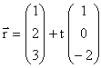
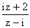

| KANTONSSCHULE REUSSBÜHL | Maturitätsprüfungen 2000 |
M a t h e m a t i k Typus C (Be / Es)
Bemerkungen: Jede Aufgabe soll auf einer neuen Seite begonnen werden.
Zeit: Drei Stunden.
Jede vollständig gelöste Aufgabe wird mit maximal 10 Punkten bewertet.
Für 40 Punkte wird die Note 6 erteilt.
1. Gegeben ist die Funktionenschar mit Gleichung y = fa(x) = (x2 – a2) ea – x mit reellem Scharparameter a > 0.
2. Die Studenten Adam und Beda spielen zusammen Poker. Adam gewinnt jede Partie mit der Wahrscheinlichkeit 0.6 , Bedas Gewinnchance ist also 0.4 . Der Verlierer muss dem Sieger 10 Franken bezahlen. Adam besitzt zu Beginn des Spiels 10 Franken, Beda 20 Franken. Die beiden Studenten wollen spielen, bis einer von ihnen kein Geld mehr hat.
Mit welcher Wahrscheinlichkeit müssen die Studenten mehr als drei Partien pokern?
Mit welcher Wahrscheinlichkeit besitzt Adam als Erster alles Geld und gewinnt somit das ganze Spiel?
Ein schlechter Sekretär vertippt sich im Mittel bei jedem 100. Buchstaben. Eine volle Seite besteht aus 4000 Anschlägen. Die Zufallsvariable X bezeichne die Anzahl Fehler pro Seite.
Wie gross ist die Wahrscheinlichkeit, dass die Anzahl Fehler auf einer Seite mindestens 20 und höchstens 50 beträgt?
Bestimmen Sie ein symmetrisches Intervall um den Erwartungswert μ , in dem X mit der Wahrscheinlichkeit 0.999 liegt.
Eine Sekretärin behauptet von sich, dass sie bei 4000 Anschlägen weniger Tippfehler als ihr Kollege mache. Formulieren Sie eine Hypothese und geben Sie einen Ablehnungsbereich auf dem 95%-Signifikanzniveau an.
3. Gegeben sind die Geraden g = (A(16/-10/-3) P(17/-12/-1)) und h: 
4. Durch die Funktion f : z → w =  wird eine Abbildung der z-Ebene in die w-Ebene beschrieben.
Bestimmen Sie den Definitionsbereich, alle Fixpunkte und die Gleichung der Umkehrabbildung von f.
Welche Abbildung ergibt sich durch die Verknüpfung f ° f ?
Bestimmen Sie das Bild der imaginären Achse der z-Ebene.
G = { z ∈ C / Im (z) ≤ 0 } . Bestimmen Sie das Bildgebiet f (G) und zeichnen Sie es in der w-Ebene ein (schraffieren).
5. Lösen Sie die beiden voneinander unabhängigen Teilaufgaben:
Geben Sie zuerst die allgemeine Lösung an und dann die Gleichung derjenigen Lösungskurve, die durch den Punkt (2/2) geht. Charakterisieren Sie diese Kurve.